Stockholm
Stockholm is the capital of Sweden and the most populous city in the Nordic countries 949,761 people live in the municipality,approximately 1.5 million in the urban area,and 2.3 million in the metropolitan area. The city stretches across fourteen islands where Lake Mälaren flows into the Baltic Sea. Just outside the city and along the coast is the island chain of the Stockholm archipelago. The area has been settled since the Stone Age, in the 6th millennium BC, and was founded as a city in 1252 by Swedish statesman Birger Jarl. It is also the capital of Stockholm County.
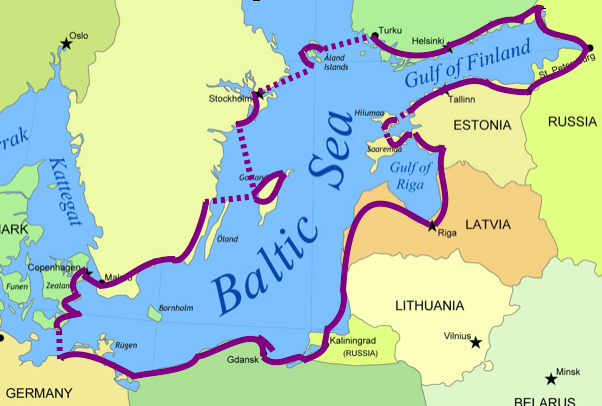 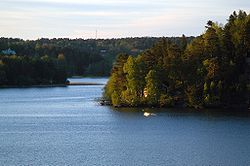Stockholm is the cultural, media, political, and economic centre of Sweden. The Stockholm region alone accounts for over a third of the country's GDP, and is among the top 10 regions in Europe by GDP per capita. It is an important global city,and the main centre for corporate headquarters in the Nordic region. The city is home to some of Europe's top ranking universities, such as the Stockholm School of Economics, Karolinska Institute and Royal Institute of Technology (KTH). It hosts the annual Nobel Prize ceremonies and banquet at the Stockholm Concert Hall and Stockholm City Hall. One of the city's most prized museums, the Vasa Museum, is the most visited non-art museum in Scandinavia. The Stockholm metro, opened in 1950, is well known for its decoration of the stations; it has been called the longest art gallery in the world. Sweden's national football arena is located north of the city centre, in Solna. Ericsson Globe, the national indoor arena, is in the southern part of the city. The city was the host of the 1912 Summer Olympics, and hosted the equestrian portion of the 1956 Summer Olympics otherwise held in Melbourne, Victoria, Australia.
Stockholm is the seat of the Swedish government and most of its agencies, including the highest courts in the judiciary, and the official residencies of the Swedish monarch and the Prime Minister. The government has its seat in the Rosenbad building, the Riksdag (Swedish parliament) is seated in the Parliament House, and the Prime Minister's residence is adjacent at the Sager House. The Stockholm Palace is the official residence and principal workplace of the Swedish monarch, while the Drottningholm Palace , a World Heritage Site on the outskirts of Stockholm, serves as the Royal Family's private residence.
Stockholm became a modern, technologically advanced, and ethnically diverse city in the latter half of the 20th century. Many historical buildings were torn down during the modernist era, including substantial parts of the historical district of Klara, and replaced with modern architecture. However, in many other parts of Stockholm (such as in Gamla stan, Södermalm, Östermalm, Kungsholmen and Vasastan), many "old" buildings, blocks and streets built before the modernism and functionalism movements took off in Sweden (around 1930–1935) survived this era of demolition. Throughout the century, many industries shifted away from work-intensive activities into more high-tech and service industry areas. Currently, Stockholm's metropolitan area is one of the fastest-growing regions in Europe, and its population is expected to number 2.5 million by 2024. As a result of this massive population growth, it has been proposed to build densely-packed high-rise building in the city centre connected by high-rise walkways.
Stockholm is Sweden's financial centre. Major Swedish banks, such as Nordea, Swedbank, Handelsbanken, and Skandinaviska Enskilda Banken, are headquartered in Stockholm, as are the major insurance companies Skandia, Folksam and Trygg-Hansa. Stockholm is also home to Sweden's foremost stock exchange, the Stockholm Stock Exchange (Stockholmsbörsen). Additionally, about 45% of Swedish companies with more than 200 employees are headquartered in Stockholm. Noted clothes retailer H&M is also headquartered in the city. In recent years, tourism has played an important part in the city's economy. Stockholm County is ranked as the 10th largest visitor destination in Europe, with over 10 million commercial overnight stays per year. Among 44 European cities Stockholm had the 6th highest growth in number of nights spent in the period 2004–2008.
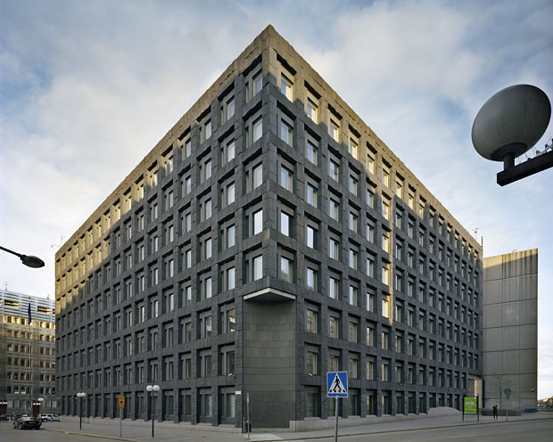 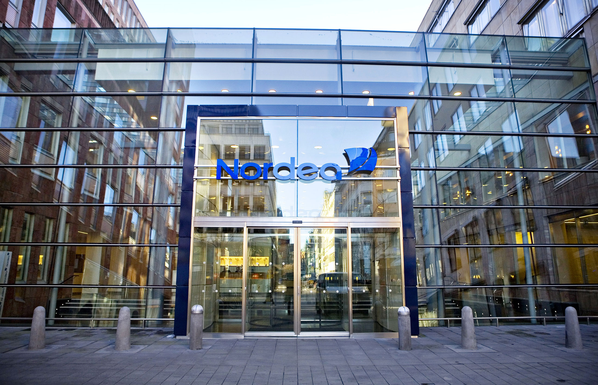Research and higher education in the sciences started in Stockholm in the 18th century, with education in medicine and various research institutions such as the Stockholm Observatory. The medical education was eventually formalized in 1811 as Karolinska Institutet. The Royal Institute of Technology was founded in 1827 and is currently Scandinavia's largest higher education institute of technology with 13,000 students. Stockholm University, founded in 1878 with university status granted in 1960, has 52,000 students as of 2008. It also incorporates many historical institutions, such as the Observatory, the Swedish Museum of Natural History, and the botanical garden Bergianska trädgården. The Stockholm School of Economics, founded in 1909, is one of the few private institutions of higher education in Sweden. In the fine arts, educational institutions include the Royal College of Music, which has a history going back to the conservatory founded as part of the Royal Swedish Academy of Music in 1771, the Royal University College of Fine Arts, which has a similar historical association with the Royal Swedish Academy of Arts and a foundation date of 1735, and the Swedish National Academy of Mime and Acting, which is the continuation of the school of the Royal Dramatic Theatre, once attended by Greta Garbo. Other schools include the design school Konstfack, founded in 1844, the University College of Opera, the University College of Dance, and the Stockholms Musikpedagogiska Institut.
The most popular spectator sports are football and ice hockey. The three most popular football clubs in Stockholm are AIK, Djurgårdens IF and Hammarby IF, who all play in the first tier, Allsvenskan. AIK play at Sweden's national stadium for football, Friends Arena in Solna, with a capacity of 54,329. Djurgårdens IF and Hammarby play at Tele2 Arena in Johanneshov, with a capacity of 30,000 spectators. All three clubs are multi-sport clubs, which have ice hockey teams; Djurgårdens IF play in the first tier, AIK in the second and Hammarby in the third tier, as well as teams in bandy, basketball, floorball and other sports, including individual sports. Historically, the city was the host of the 1912 Summer Olympics. From those days stem the Stockholms Olympiastadion which has since hosted numerous sports events, notably football and athletics. Other major sport arenas are Friends Arena the new national football stadium, Stockholm Globe Arena, a multi-sport arena and one of the largest spherical buildings in the world and the nearby indoor arena Hovet. Beside the 1912 Summer Olympics, Stockholm hosted the 1956 Summer Olympics Equestrian Games and the UEFA Euro 1992. The city was also second runner up in the 2004 Summer Olympics bids. Stockholm hosted the 1958 FIFA World Cup Stockholm also hosted all but one of the Nordic Games, a winter multi-sport event that predated the Winter Olympics. In 2015 the Stockholms Kungar Rugby league club were formed. They are Stockholm's first Rugby league team and will play in Sweden's National Rugby league championship. Every year Stockholm is host to the ÖTILLÖ Swimrun World Championship.
St. Lucia in Sweden:
In Sweden, the tradition of Lucia derives from both pagan and Christian origins with different sources citing both St. Lucia of Syracuse, a martyr who died in the year 304, and on a Swedish legend, who is thought to have consorted with the devil. The name Lucia, is sometimes thought to be associated with both lux (latin word for ‘light’) and Lucifer (‘Satan’). However today, Lucia has become more of a cultural celebration across Sweden and is a tradition that continues through the generations. In a Lucia procession, typically a girl will take on the role of Lucia and will wear light in her hair which is often a headdress containing lit candles (Sweden’s health of safety continues to baffle me) . She will be accompanied by both girls and boys, dressed in white, bearing candles as they sing songs, around the theme of bringing light into the darkness. Natten går tunga fjät – Night Walks with a Heavy Step is a common Lucia song sung during the procession and translates:
"Night walks with a heavy step Round yard and hearth, As the sun departs from earth, Shadows are brooding. There in our dark house, Walking with lit candles, Saint Lucia, Saint Lucia!"
Julmarknader – Christmas Markets:
Every year in Gamla Stan’s main square (Stortorget), you can immerse yourself in Swedish Christmas tradition through over 40 various stalls that line the square. With a warm cup of Glögg (Sweden’s version of mulled wine), take a lazy wander and explore the foods and gifts on offer: From Christmas sweets & smoked reindeer to handmade knitted caps & a whole range of Swedish handicrafts. The market is quite small when compared to its European counterparts, but the setting definitely makes up for it. When you think of Skansen, you might consider it as more for a summer outing! But think again… as they have a lot to offer their visitors over the Christmas season: Skansen’s Christmas Market has been going since 1903 and while the entry price doesn’t make this a cheap outing, Skansen do offer more than just Christmas markets: With a whole programme of events, they pride themselves on being so much more than just a Christmas market. Insider tip: On Christmas Eve, you can get FREE ENTRY TO SKANSEN where you will find a whole host of activities going on.
 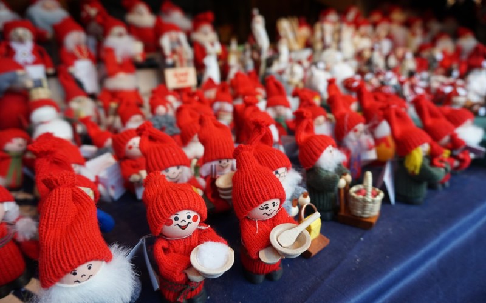
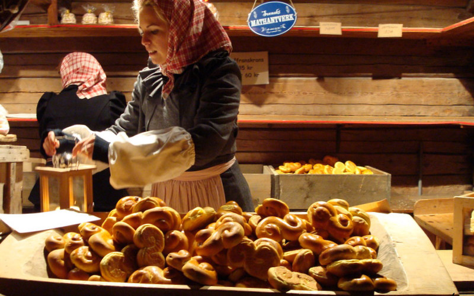
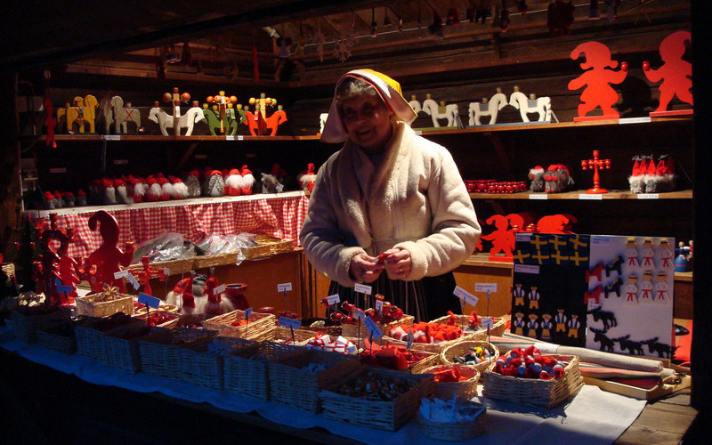
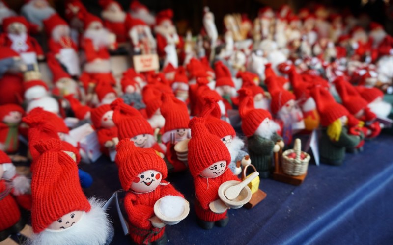
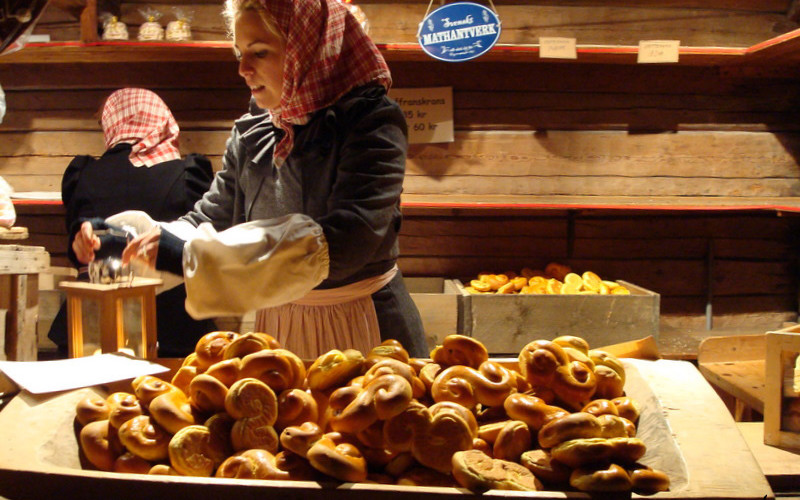
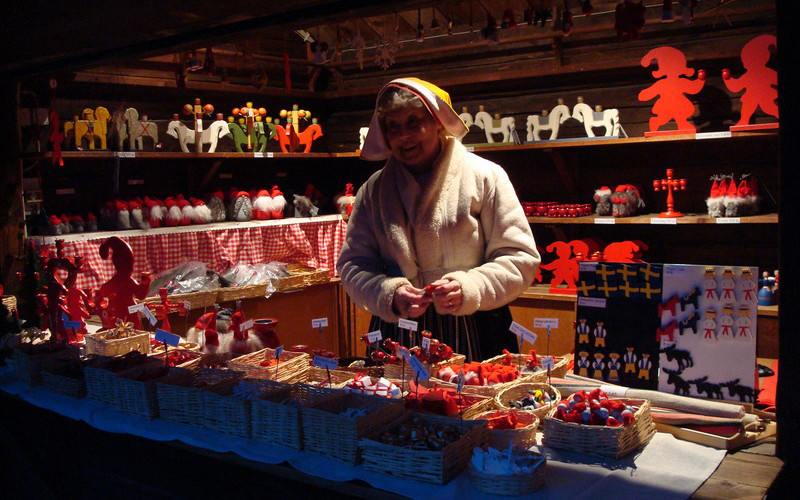 Valborg in Sweden: Celebrating the Arrival of Spring:
Valborgsmässoafton (known perhaps more commonly as Valborg) is the Swedish translation of the German Walpurgisnacht (Walpurgis Night in English) and it is thought to be named after the 8th century missionary Saint Walpurga. The legend of Walpurgis Night derives from Germany where, on this night, witches were thought to gather on a hill near the Brocken – the highest peak in the Harz mountains. Walpurgis Night later became a fest to drive out evil spirits through the making plenty of noise. Although Valborg has pagan roots, today Valborg has become a Swedish cultural festival celebrated openly and regardless of religious beliefs. You will likely find Valborg celebrations also taking place across Scandinavia and in many countries throughout Europe. Depending on where in Stockholm you choose to go for Valborg, your experience will vary. Many people opt to visit the bonfire happening in their local community (a list of some of the main celebrations taking place in 2017 can be found below) and many of these bonfires are accompanied by fireworks, live music, food, torch processions and perhaps even fire dancing in some places!
 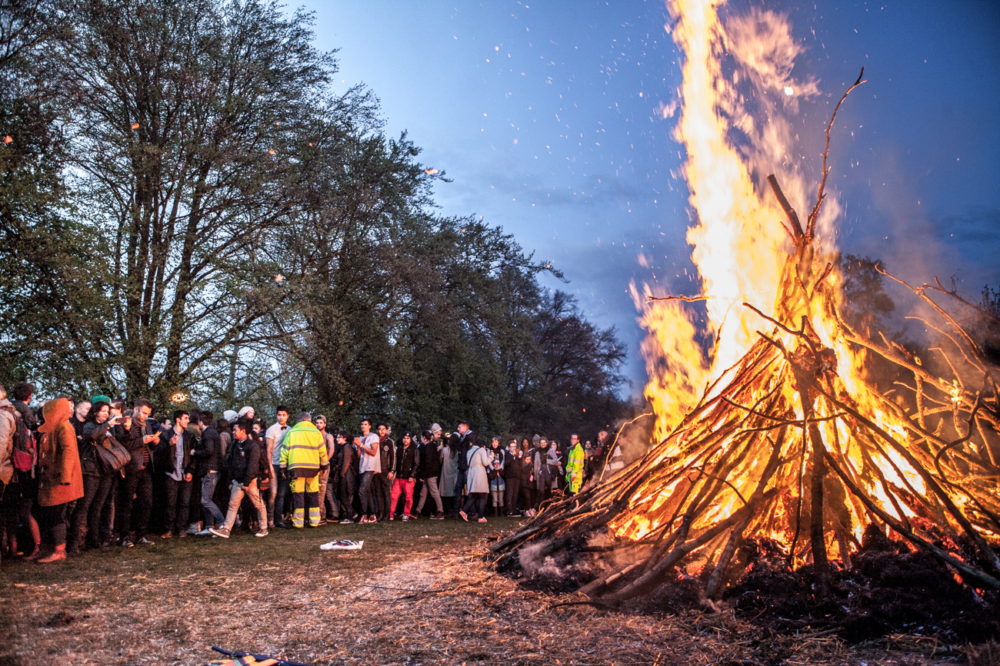
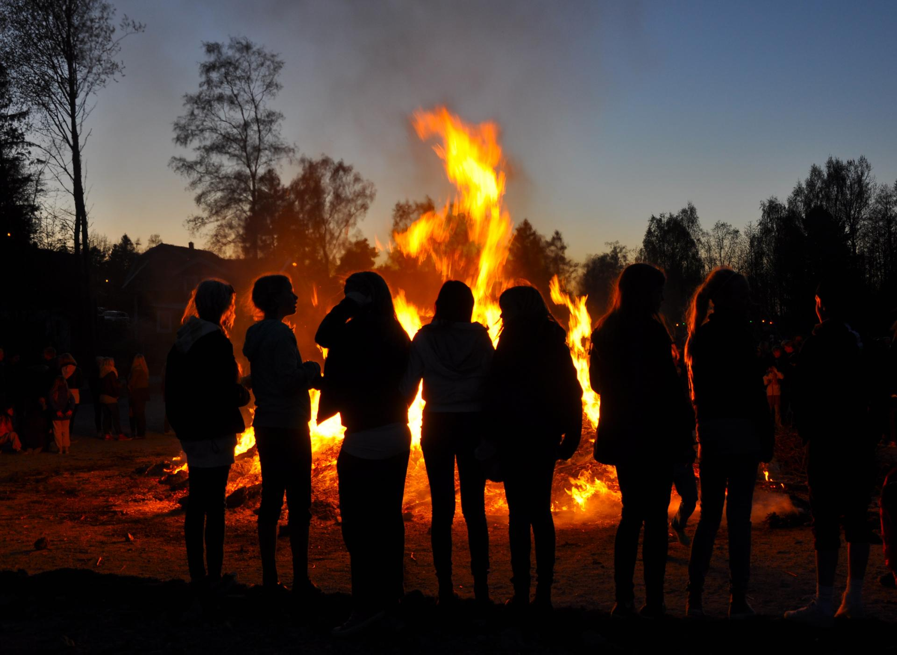
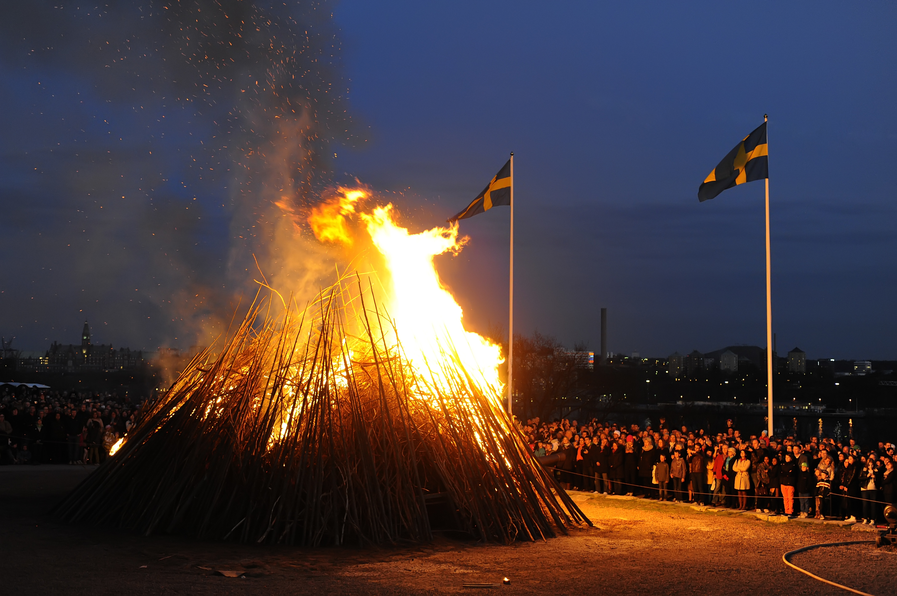
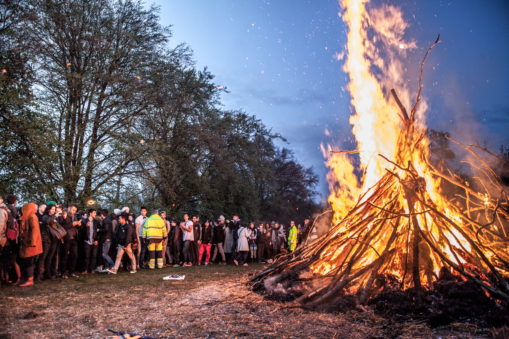
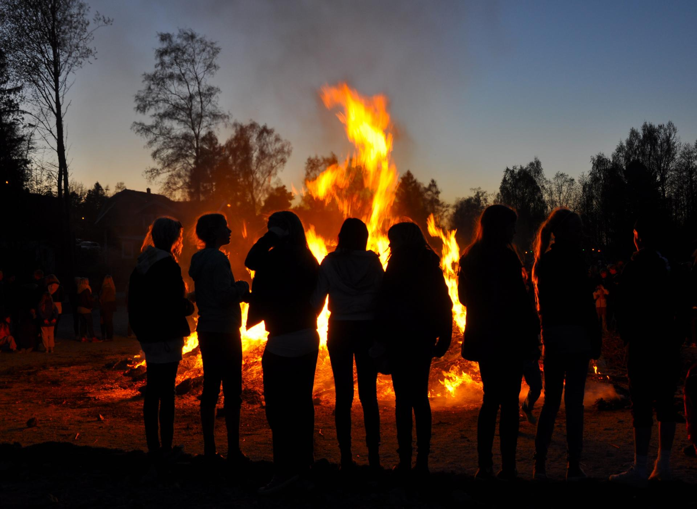
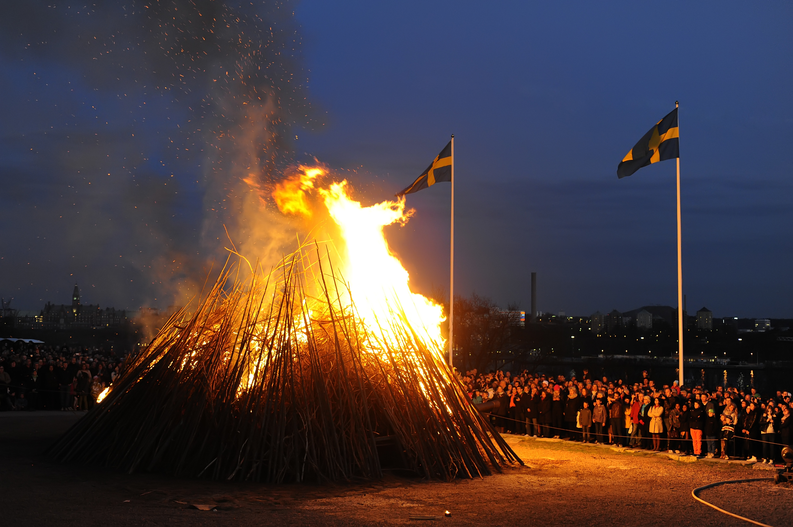 Alla Helgons Dag and Hagapark Ljusfesten:
For centuries, candles, lamps and the warmth of the cosy fireplace have been used to bring light into the darkness in homes across the land and even today, you can see evidence of this throughout Stockholm during this dark winter season. It is probably no coincidence then that many festivities (both old and new) centre around the theme of light It all starts with All Saints Day (Alla helgons dag) where, during the first weekend in November, candles are lit at gravesides and in cemeteries to commemorate those who have passed. Set up by volunteers, this relatively new light festival has been running for 10 years and takes place during the first weekend in November. Families and friends gather, with their facklor (lit torches) and walk through Hagaparken in central Stockholm, creating a fackeltågen (light train). When the weather is good, lit-up boats set sail on the waters and several fires, candles and lights are on display for all to see. The goal of the Light Festival is to “convey joy, warmth and reflection in an otherwise dark season and remind us of the rich natural and cultural environments that are around Brunnsviken water, a part of the unique Royal National City Park.” But it is season of advent in December that sees the ultimate light celebration in Sweden. Lucia is a big deal here and across Stockholm, you will not find it hard to find artistic candle processions, set to beautifully arranged traditional Swedish songs, in churches throughout the city.
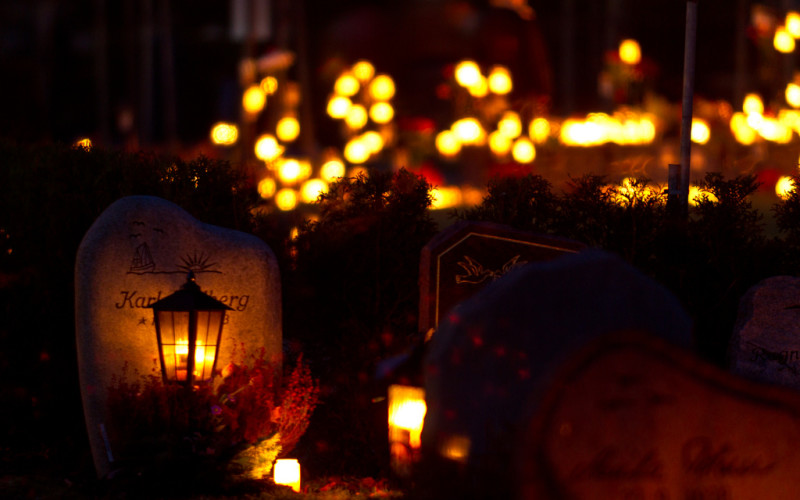 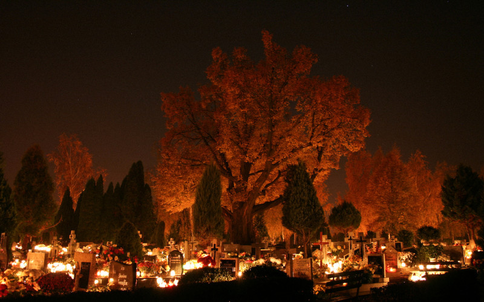 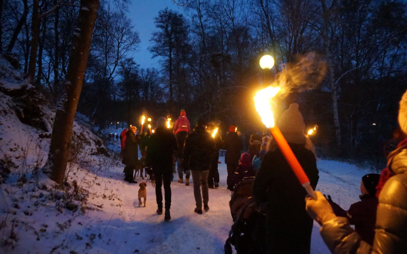 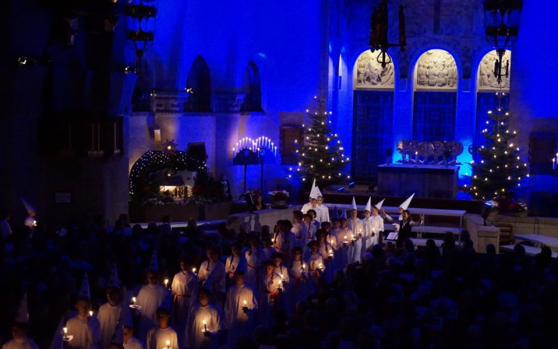